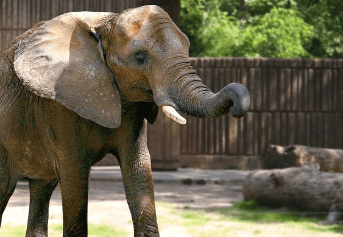

अजिंठा आणि एलोरा लेणी

अजिंठा आणि एलोरा लेण्या ही औरंगाबादमधील दोन सर्वाधिक लोकप्रिय पर्यटन ठिकाणं आहेत. मुख्य शहरातून या पर्यटन स्थळांना बस किंवा टॅक्सीने भेट देता येते. अजिंठा लेण्या ३० कातळांमध्ये कोरलेल्या असून बौद्धकालीन वास्तूशिल्पाचा नमुना मानला जातो. या लेण्या इ.स. पूर्व २ऱ्या शतकांत घडविण्यात आल्या. तर एलोरा लेण्या कातळांत कोरलेल्या असून ३४ हिंदू, बौद्ध तसेच जैन देवलयांचा संगम आहे. यांची घडण इ. स. पूर्व ६व्या शतकांत करण्यात आली.
बीबी का मकबरा
औरंगाबादला भेट देणाऱ्याने बीबी का मकबरा नक्की पाहावा. मुख्य शहरापासून हे ठिकाण सुमारे ५ किमी अंतरावर आहे आणि तिथे बस किंवा टॅक्सीने जाता येते. सम्राट औरंगजेबची पत्नी दिलरस बानू बेगम हिच्या स्मरणार्थ १६६० मध्ये हा मकबरा बांधण्यात आला. ही वास्तू हुबेहूब ताज महालसारखी दिसते. बीबी का मकबरा हा भारतातील सर्वोत्तम मुघल वास्तूकलेचा नमुना मानला जातो. तो मुख्य शहरापासून जवळपास ३ किमीवर आहे.
दौलताबाद किल्ला
दौलताबाद शहर हे औरंगाबादपासून १५ किमी अंतरावर असून रस्ते मार्गाने सर्व मुख्य शहरांना चांगल्याप्रकारे जोडण्यात आले आहे. चिखलठाणा हे औरंगाबादकडे जाण्यासाठी सर्वात जवळचे विमानतळ असून ते १२ किमी अंतरावर आहे. याठिकाणी पर्यटक नियमितपणे सकाळी ९:०० ते संध्याकाळी ६:०० यावेळेत भेट देऊ शकतात. किल्ल्यात प्रवेश करण्यासाठी रू १० ते रू. १०० दरम्यान खर्च येतो.
सिद्धार्थ गार्डन आणि प्राणिसंग्रहालय

आठवड्याच्या शेवटी आणि संध्याकाळी इथल्या सिद्धार्थ गार्डन आणि प्राणिसंग्रहालयात मोठी गर्दी असते. हे ठिकाण औरंगाबाद रेल्वे स्थानकापासून केवळ ३ किमी अंतरावर आहे. इथल्या प्राणिसंग्रहालयात वन्यजीव आणि सरपटणारे प्राणी आहेत. ज्यामध्ये मगरी, तरस, वाघ, सिंह, साप, कोल्हे आणि तत्सम प्राण्यांचा समावेश आहे.
इथे असलेल्या बाग आणि प्राणिसंग्रहालयासाठी प्रवेश शुल्क आकरण्यात येते: गार्डनकरिता रू २० आणि प्राणिसंग्रहालयासाठी रू. ५० आकरण्यात येतात.